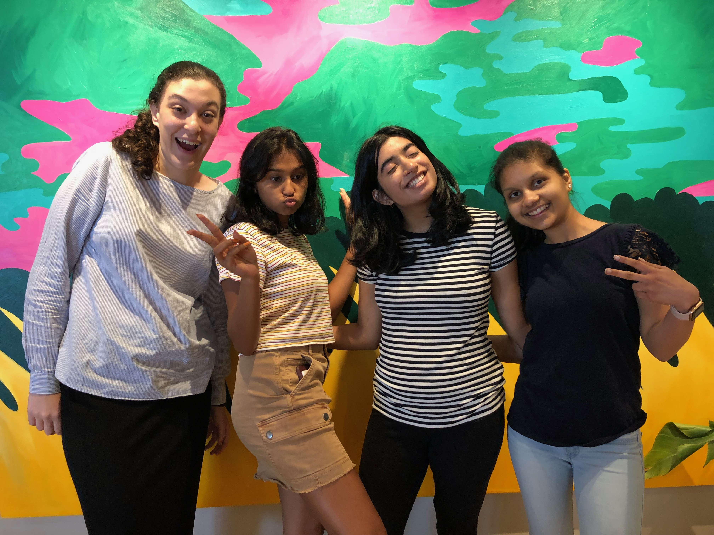
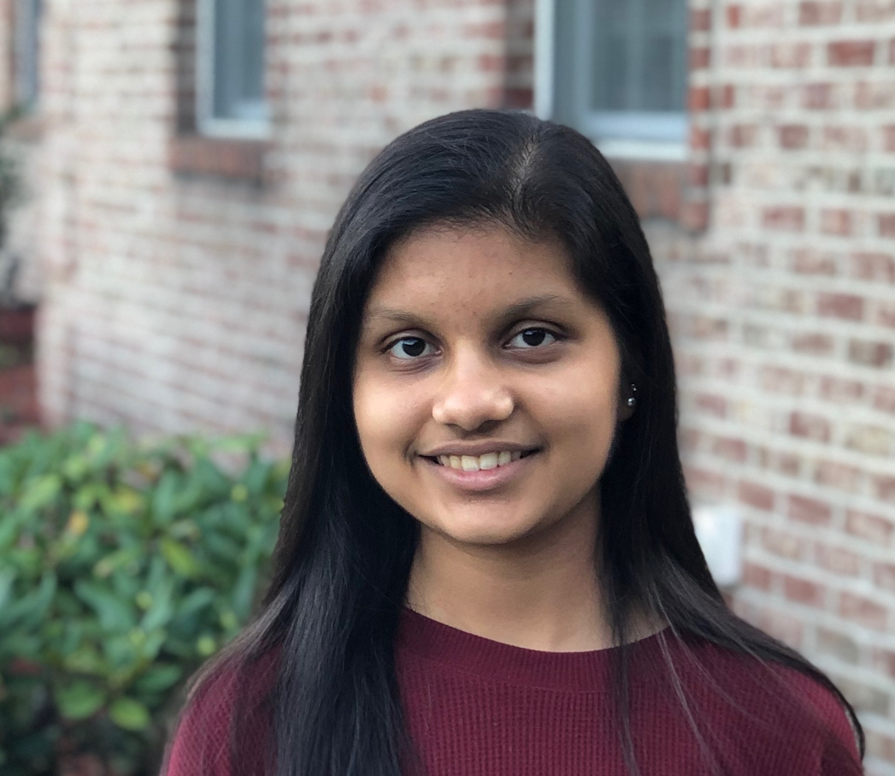

About Us!
We are a group of Kode with Klossy scholars and we are making this web page about international crises so that we can raise awareness and help solve them. We each chose a topic that was close to our hearts and wrote a short explanation about the crises. The purpose of the page is raising awareness so that we can try making a difference in the world.

Chaya Morgulis
I’m a 17 year old from Jerusalem Israel. I like swimming, reading and playing the piano. I hope to go to medical school and become a neurosurgeon so that I can help people feel healthier and happier.

Prachi Swar
Hey, i’m a 16 year old from Queens, New York. I love dancing in my spare time, and am a big book enthusiast. I have been interested in coding for a while now, so KWK has really helped expand my knowledge about coding and made me love it even more. I hope to pursue either CS or biology in the future.

Aditi Desai
Hi! I’m a 17 year old STEM and humanities enthusiast! I have never tried computer science or coding, and feel so fortunate to have worked with the KWK team and my personal group! I love to run, write, and read! I hope to pursue public health in the future.
Zehra Rizvi
I am 17 years old, and I am from Jericho, New York. I like to bake, listen to music, and play my guitar. I hope to attend university in a big city and have the opportunity to travel in whatever profession I end up practicing.